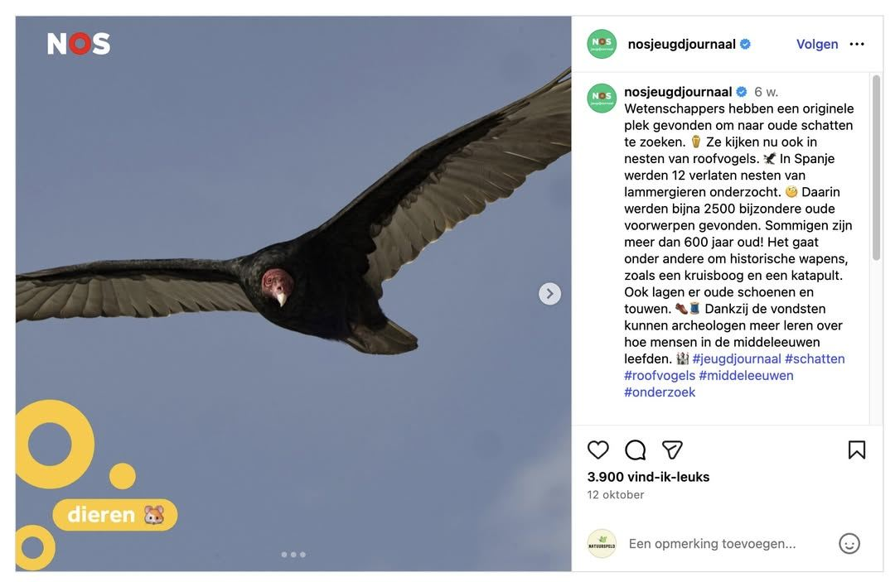

Roodkopgier, geen lammergier
26 november 2025 · NOS Jeugdjournaal
- Op de foto
- Roodkopgier
- Het ging over
- Lammergier

Leuk nieuwtje! In Spanje worden oude nesten van Lammergier gecontroleerd, waarbij oude voorwerpen gevonden worden van soms wel meer dan 600 jaar oud! Goed dat ze dit delen bij het @nosjeugdjournaal. Alleen jammer dat ze dan een foto gebruiken van een Turkey vulture (Roodkopgier), een Amerikaanse soort.